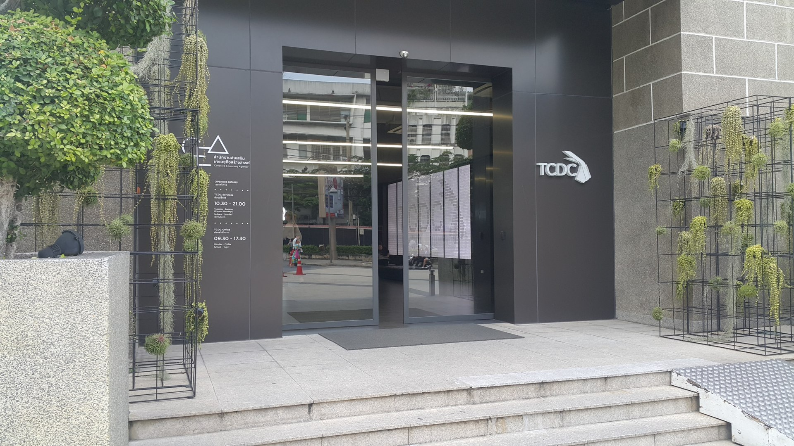

TCDC Bangkok ศูนย์สร้างสรรค์งานออกแบบ

TCDC Bangkok ศูนย์สร้างสรรค์งานออกแบบ
TCDC หรือ Thailand Creative & Design Center เป็นศูนย์สร้างสรรค์งานออกแบบแห่งชาติของไทย ก่อตั้งขึ้นเพื่อส่งเสริมและพัฒนาความคิดสร้างสรรค์ในอุตสาหกรรมต่าง ๆ ทั้งในระดับบุคคลและองค์กร โดยให้บริการพื้นที่และทรัพยากรที่สนับสนุนการออกแบบและนวัตกรรม
การเดินทาง
BTS :ลงที่สถานีสะพานตากสิน (Saphan Taksin) และต่อรถหรือเดินมาทางถนนเจริญกรุง
โดยรถประจำทาง: สายรถเมล์ที่ผ่าน ได้แก่ สาย 1, 75, 35
ที่ตั้ง: อาคารไปรษณีย์กลาง 1160 ถ. เจริญกรุง แขวงบางรัก เขตบางรัก กรุงเทพมหานคร 10500
เวลา:
- วันอังคาร – วันอาทิตย์: 10.30 – 19.00 น.
- วันจันทร์และวันหยุดนักขัตฤกษ์: ปิดทำการ
ดูข้อมูล: https://www.tcdc.or.th/ หรือ https://www.facebook.com/tcdc.thailand/?locale=th_TH/a>